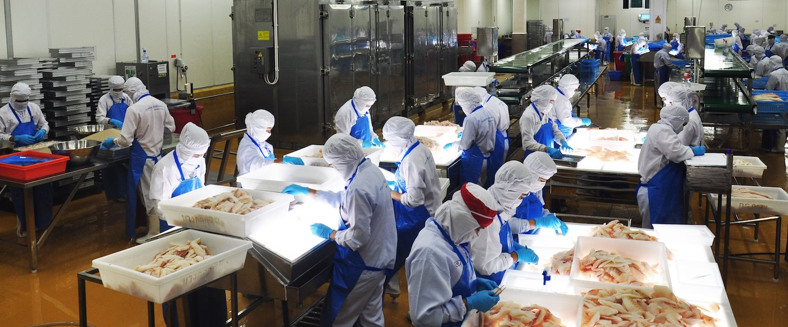

Freshness Guaranteed
Freshness Guaranteed

KINGWELL FIRST (Bangkok Seafood) มุ่งมั่นที่จะเป็นคู่ค้าที่คุณไว้วางใจ
ด้วยมาตรฐานการผลิตระดับโลกและเทคโนโลยีที่ทันสมัย

KINGWELL FIRST (Bangkok Seafood) ก่อตั้งขึ้นในปี 2567 (2024) ด้วยแรงบันดาลใจที่จะยกระดับมาตรฐานอาหารทะเลแช่แข็งของไทยสู่ระดับสากล เราผสานความเชี่ยวชาญด้านวัตถุดิบเข้ากับนวัตกรรมการผลิตที่ทันสมัยที่สุด
เรามุ่งเน้นการคัดสรรวัตถุดิบจากแหล่งธรรมชาติที่ยั่งยืน ผ่านกระบวนการ IQF (Individual Quick Freezing) เพื่อรักษาความสด รสชาติ และคุณค่าทางโภชนาการให้เสมือนเพิ่งขึ้นจากทะเล
เราให้ความสำคัญสูงสุดกับความปลอดภัยทางอาหาร (Food Safety) และคุณภาพที่สม่ำเสมอ
British Retail Consortium Standards
Hazard Analysis Critical Control Points
Halal Certification Authority Thailand
Sustainable Seafood Certifications
KINGWELL FIRST พร้อมมอบสิ่งที่ดีที่สุดให้กับธุรกิจของคุณ